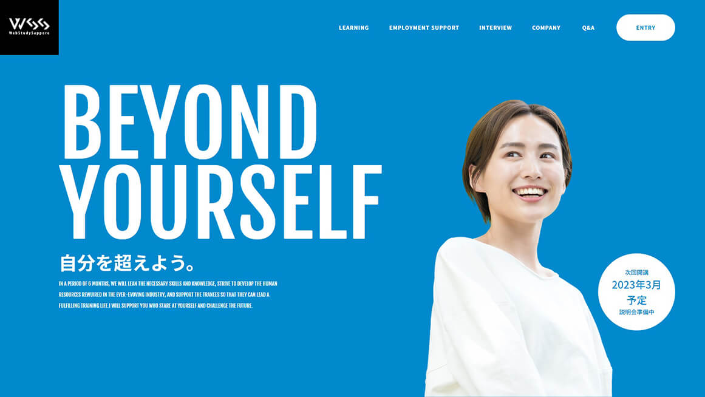
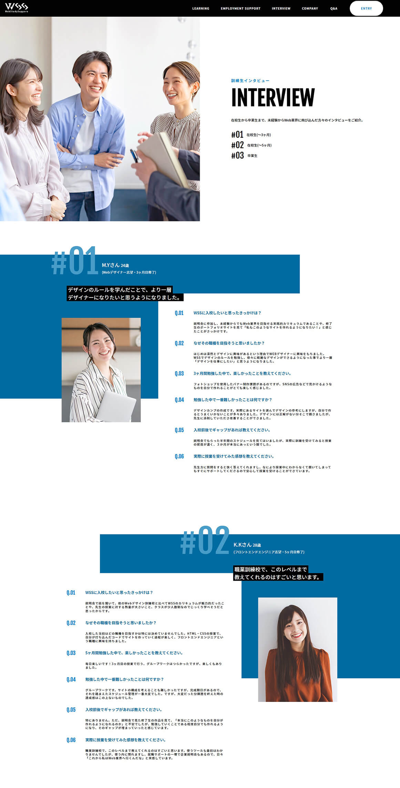

Web Study Sapporo
制作期間： 1週間(コーディング作業のみ)
使用言語： HTML, CSS, jQuery
レスポンシブ： PCサイズのみ
ページ数： 8ページ
グループワークの課題として、現行のWSSのコーポレートサイトをリニューアルしました。
リニューアルの内容としては、説明会ページを新規作成し、説明会に参加していなくても、参加した方と同等の情報を得られるようにしてほしい、且つ説明会参加者を増加させられるようなサイトにしてほしいとのことでした。
WSSに興味がある方や、初学者の方にとって、どのような情報が必要とされているかを常に考えながら、コンテンツやレイアウトを構成しました。


トップ、就職サポート、インタビュー、説明会のページのコーディングを担当しました。
ページごとに伝えたい情報に合わせた異なるレイアウトだった為、コーディングに時間がかかりましたが、進める内にコーディングの速度が早くなり、大きく成長できたグループワークでした。
技術面だけではなく、サイトのコンテンツ考案や複数人で作業を進める大変さを感じた部分も、実務を意識するきっかけになり、とても有意義な課題でした。